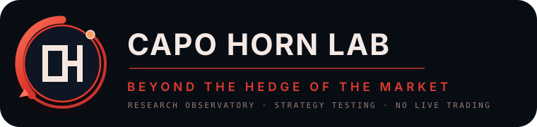

Set the question
Turn a market intuition into clear rules and constraints.
Capo Horn Lab is becoming a research observatory: a place to test a market idea before anyone has to trust it.
The next Capo Horn Lab should not look like a generic fintech landing page. It should feel like an instrument of investigation: deliberate, spatial, disciplined, and a little dangerous in the right way. The visual language is navigation—not neon finance.
Turn a market intuition into clear rules and constraints.
Data type, timeframe, news context, execution assumptions.
Results, limits, invalidations, and the next question.

The name stays explicit. The motto stays central. The red identity becomes navigational rather than decorative: a lab crossing the uncertain edge of the market.
Mark, wordmark and motto are now separate reusable assets.
The page uses orbital motion, layered data planes and depth instead of generic fintech glow.
The homepage can now be rebuilt around this visual language page by page.